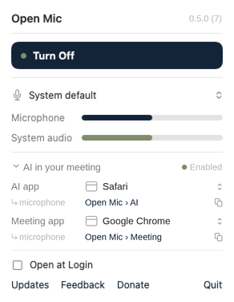

macOS 14.2以降 · 0.5.0 Beta 1
AIを、会議に招待しよう。
Open Micは、マイクとMacで再生している音をまとめて、AIアプリのマイク入力へ届けるメニューバーアプリです。Beta 1では、会議の声をAIへ、AIの声を会議へ渡すための専用入力も使えます。

準備ができたら、使うときは2ステップ。
初回はOpen Micとオーディオドライバをインストールし、マイク・システム音声の利用に必要な権限を許可してください。
- メニューバーでOpen Micを開き、Turn On。
- AIアプリのマイク入力で Open Mic を選択。
使い終わったら Turn Off。通常の「Open Mic」入力はインストール後も残り、OFF中は音を送りません。手作業のオーディオ配線は不要です。
会議の声を、AIへ。AIの声を、会議へ。
双方向で使うときだけ、AI in your meeting を開き、AI app と Meeting app を選びます。次に、それぞれのアプリ内で対応するマイク入力を選んでください。Open Micが各アプリのマイク設定を勝手に変更することはありません。
| どこで選ぶ？ | マイク入力名 | 届ける音 |
|---|---|---|
| 基本利用のAIアプリ | Open Mic | 自分のマイク＋Macの再生音※ |
| 双方向利用のAIアプリ | Open Mic › AI | 自分のマイク＋選んだ会議アプリの音 |
| 双方向利用の会議アプリ | Open Mic › Meeting | 自分のマイク＋選んだAIアプリの音 |
AIの再生音をAI自身へ、会議の再生音を同じ会議へ戻さない経路です。自分のマイク音声は両方に届きます。
AIと会議は別々のアプリ、または別々のブラウザで開いてください。同じブラウザの別タブでは分けられません。専用の2入力は、別々のAI app・Meeting appを設定してOpen Micが音を供給している間に使えます。入力が見つからない場合は、設定・ONを確認して利用先のアプリを再起動してください。

まずは、試せる環境で。
Beta版です。実際の会議での動作や、ブラウザ側の音声処理による音質への影響は未検証です。大切な会議で使う前に、相手に届く音を確認してください。
ONはOpen Mic側の音声供給状態、Enabledは専用入力の公開状態です。どちらも、相手が音を受け取れていることの確認ではありません。
Open Mic自体に、録音・文字起こし・AIの自動操作機能はありません。